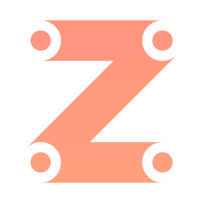

Team

(not a placeholder anymore btw)

Jaegerwald
Software Developer
I've been passionate about Anki and their products ever since I was a little kid. I'm self taught, and I enjoy doing the things I do as a hobby. If you've got something you want to ask us, I'll always be available for contact!
GitHub
Email

EPU-Jelly
Hardware Developer
I have had Cozmo since the first year of its release, and as of recently I do CPU swaps for ANKI's other robot Vector. I love the personality, technical capibilities and quality that our favourite little robots have and am always looking for ways to improve or work on them. I am open to any questions or suggestions you might have feel free to contact me on any of my socials :3.
GitHub

Chri-Deefer
Web Developer & Software Preserver
Got my first Cozmo long ago. Dude was my best friend. I've been in and out of them for battery replacements for years now. Looking forward to keeping the community alive. Open for contact! :)
Website

cozmo14047
PCB/Software Developer
Ever since I got my first Cozmo in 2018, I've been passionate about making him fully autonomous. I've always been fascinated by Anki and their products. Working on Cozmo is more than just a hobby for me; it's a passion.
If you want to chat about Cozmo or have any inquiries, my inbox is always open! (¬‿¬)
GitHub

Elliolectric
Hardware & Software Developer
After finding a broken Cozmo asking for a new home, it's been my goal to fix him up. I'm excited to learn and work together with the rest of the Razu team to make that and more a reality!
If you have any ideas or suggestions regarding Cozmo and his features, feel free to message me :3
GitHub